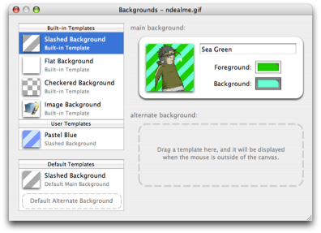

Working with backgrounds
One of Pixen's most distinctive features is its extensive background configurability. When you're working on a sprite for a game, you often want to see it exactly as it will appear in the program. Or perhaps you don't want it to look like that normally—that would be distracting—but you'd like to be able to quickly see how it might look in-game. Pixen can help. Here's the background configurator:

To open the backgrounds configurator:
Click the Backgrounds item in a document's toolbar.
or
Use the View > Background Settings... menu item.
On the left are a list of background templates, separated into built-in templates we've provided and user temlpates that you've made yourself or have gotten from others. On the right are the current document's settings. In the bottom left are the default settings used when creating new documents. See the links below for more information on how to use Pixen's background features.
See also
Setting a document's background
Using alternate backgrounds
Setting a default background
Background Topics